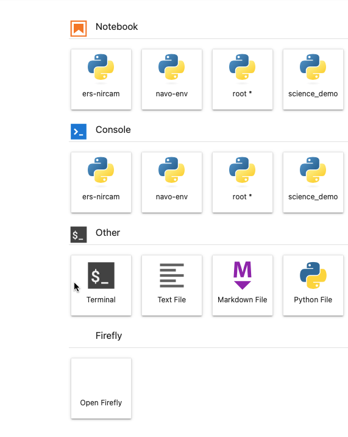

Fornax Science Console#
What is the Fornax Science Console?#
The Fornax Science Console is a compute system in the cloud near to NASA data in the cloud which provides a place where astronomers can do data intensive research with reduced barriers. The first barrier we remove is the need to install software and deal with packages on your personal computer. This greatly simplifies the setup and startup for any astronomer who now no longer needs to worry about setting up and maintaining a python working environment. Environments with pre-installed python software tailored to astronomers are provided upon login to Jupyterlab for all users of Fornax. The second barrier we remove is the need for every astronomer to buy compute/memory commensurate to data science level projects. You will no longer need to buy the fastest/ most memory intensive personal computer. When you need those capabilities, we will have it ready for you. When you need to just write or debug code, we have smaller compute ready for that too. These two things (increased compute/memory and ease of use) should lower the barrier of entry to data science projects for all NASA astronomers. You no longer need to have an expensive computer, you no longer need to be an expert at installing software, you just need to have an idea! Lastly, by lowering the barrier to entry, we also increase the potential for reproducibility of big data results in astronomy. Before, if you were wanting to reproduce some data intensive work done in the literature, it would have been challenging to to have the right compute and setup, now you just need a login….
What does it do? (Basic Capabilities)#
Increased ease of use,
Increased number of CPUs,
Increased memory,
Increased inclusion,
Increased reproducibility
Who is it for?#
All astronomers, particularly those interested in analysis of NASA astrophysics data.
Limits: What does it not do?#
Limits on cores/RAM:
There are several options for the size of the compute. Please select the smallest that you can use for testing and exploration. Do not use the larger images unless you have already tested a smaller subset of the analysis on a smaller compute instance.
There are currently no GPUs available.
In JK’s understanding (which needs to be updated) you get what the numbers say when you choose a server upon login, but for a limited time if you need slightly more, the code will not crash but will have access to slightly more.
Raen has seen some evidence of this “bursting” behavior, but doesn’t have direct knowledge of the actual configuration. It would be good to know.
Limits on disk ace:
Current default is 10GB (Feb 2024).
This can be increased on request.
Limits on incurred costs:
Users ought to be able to access any data they both want and have permissions/credentials for, regardless of where it is (AWS S3, Google’s GCS, NASA archive, personal computer, etc.).
Any data downloaded (or pushed out) from the Fornax compute will incur egress costs to Fornax. This should be limited to small analysis results only.
Aside: Historically, the data holder (e.g., IRSA) typically covers the cost (e.g., egress) of delivering the data to the user, but cloud storage buckets are starting to change both the workflows and the cost models. Buckets support large-scale data access in ways that an archive like IRSA cannot support from on-premise. This is great, but also means more data requests and larger (and less predictable) costs. Data holders can often get the costs covered through grants, arrangements with the cloud provider (e.g., AWS), etc. But, in some cases they will decide that the best option is to make the data available in a bucket under what I would call the “cloud-pricing model” and sum up as “everyone pays for what they use”. In particular, this means the data holder will pay the storage costs (which they can predict and easily control), and the requestor/end user will pay the access costs including egress (which the data holder cannot easily predict or control, but the requestor can). Individual charges are generally small and reasonable when read around in this way, and the the cloud provider often offers free access up to some small but reasonable limit. However, egress is a particular fee that often does not apply at all, but in other cases can balloon to $$$ very quickly. So it is absolutely something to be considered, planned for, and controlled. Lastly, who pays the access/egress costs is determined by a setting on the bucket. If the bucket is “requestor pays”, the user/requestor will need (e.g.,) AWS credentials to access it – charges are then billed to the AWS account that owns the credentials.
As far as I can tell, the best (AWS) option for actual controls – beyond just “monitoring” support – is AWS Budgets Actions.
AWS may charge ingress fees to bring data into an SMCE pod or user instance. This would be completely separate from any egress fees. There Someone working more directly on Fornax Daskhub would need to answer whether/how ingress applies.
Fornax will be most beneficial to use cases which:#
can be significantly parallelized to make use of large numbers of CPUs
require access to large amounts of data
require access to cloud based data (AWS only?)
The Fornax will be least beneficial to use cases which:#
run codes which are not parallelized
Some CPUs are more efficient than others. ie., the M1 is a very powerful CPU compared to what is on Fornax. (Is this true?) A user might expect a few tens of percent speed decrease when going from M1 to Fornax if there are no gains to be made from multiprocessing or cloud access
Getting started#
How to get an account?#
The platform is currently available by invitation only.
How to Log in?#
Log in at https://daskhub.fornaxdev.mysmce.com/
How to end a session?#
Before loggin out, please shut down your server. This is an important step which insures the server you are using doesn’t keep running in the background, thereby wasting resources.
Go to
FileMenu and click onhub control panelas in the below image, which will bring up the option tostop my server(in red). After stopping the server, pleaselogoutin the upper right of the jupyterhub window.
How to choose which size server to open upon login?#
Make sure to use
miniorstandardsize for writing/debugging/testing before switching to larger sizes for full runs of code at scaleOn demandmeans an AWS server that starts when the user asks for it, and runs as long as you continue to use and pay for it. This is in contrast to thespotservers at AWS which are used for short runs and are cheaper, but can be revoked at any time (per AWS needs)128 core: do not use unless given permission
What is a kernel and how to choose one?#
In Jupyter, kernels are the background processes that execute cells and return results for display.
To select the kernel on which you want to run your Notebook, go to the Kernel menu and choose Change Kernel. You can also click directly on the name of the active kernel to switch to another.
Navigating jupyter lab#
How to start a new notebook?#
The blue
+in the upper left brings you to the launcher where you can start a new, empty notebook or open a terminal window
How to get a terminal window?#
The blue
+in the upper left brings you to the launcher where you can start a new notebook or open a terminal window 
How to upload data into Fornax?#
The
uparrowin the upper left allows you to upload data. If it is a large amount of data, consider creating a zip or tar archive first.
From within Jupyter Lab, you can also use a terminal to transfer data with the usual methods (
scp,wget,curlshould all work).
What are our storage limits for uploaded data?#
Current default is 10GB (Feb 2024)
How to download data from the plaltform to my local machine?#
If it is a large amount of data, consider creating a zip or tar archive first. If it is a small file, you can right click on the file name in the file browser and scroll to
Download

Home directory#
When you log into the science console, the active directory is your $HOME directory. This directory is unique to you: edits and uploads are not visible to other users.
Raen thinks there are directories in $HOME that are shared (e.g.,
efsands3), and perhaps just mirrored or symlinked into $HOME. It would be nice to get clarification. Specifically:Which directories are/aren’t shared?
Which directories does the user have write access to, and are there any restrictions/considerations for putting stuff there (other than disk size)?
Which directories can/should the user look in to discover data they have access to? (e.g.,
s3has various archive data,efshas some data shared by users, anything else?)
Does work persist between sessions?#
Files in your home directory will persist between sessions.
pip installs will persist across kernel restarts, but not across logging out and back in.
If you want software installs to be persistent, consider setting up an environment: See below under “Making a conda environment that persists across sessions”
What is the info at the bottom of the jupyterlab window#
The github branch is listed as well as the name of the kernel in use
the kernel is listed as either ‘idle’ or ‘busy’ which is useful to know if your kernel is working or has crashed.
Is there a way to go directly from Fornax to a University’s Box account?#
Any publicly accessible web service can be reached from Fornax through the HTTPS protocol, e.g., APIs, wget, etc.
Is there a way to go directly from Fornax into a different AWS bucket that a project may pay for?#
Any publicly available bucket is visible from Fornax as it would be on your laptop. If you require an access key to see into the bucket from your laptop, you will also need that on Fornax.
How to know what computing resources are available on Fornax?#
in jupyter hub - open a terminal window by going to the file folder in the upper left, clicking on the plus sign
nprocwill give you the number of processorscat /proc/cpuinfowill give you more detailed info on the processorsfree -hwill give the amount of RAM available/usedcat /proc/meminfowill give more detailed info on the amount of RAM available/used
How to save my notebook as a python script?#
from the command line:
jupyter nbconvert --to script notebookname.ipynb
Save your work!#
the Fornax Science Console will cull servers after a user is inactive for a certain amount of time -
How long will the server stay active if not in use?#
How to run a notebook non-interactively?#
We are working on providing a job queue.
How to open a plot (png, pdf, etc.) either generated by a notebook or uploaded ?#
double clicking on them in the file browser will open them in a new tab
Will notebooks that run on Fornax also work on my laptop?#
In general, yes, but you need to have a python environment setup in the same way as on it is on Fornax.
see below under “Can I run the container from Fornax on my own personal computer/laptop?”
Who covers costs when working in Fornax?#
NASA will pay for the work that you do, but please be mindful of those costs.
How to know what costs are being incurred?#
We are working on a cost dashboard.
Is it possible to do code development in emacs or vi or some other IDE?#
Emacs or vi is possible from the terminal
The JupyterLab interface also has its own editor.
If you prefer to develop elsewhere, you can push your changes to a publicly available repo (e.g., GitHub) and synchronize that to a location on your home directory on Fornax.
Is there a limit to the number of packages a user can install?#
There is a limit on the space a user has access to, but not the number of packages, and packages are usually small.
Data Access#
How to add my own data?#
see above
Where should data be stored on Fornax?#
See “Home Directory” above
How to access images in the cloud?#
Tutorial notebook on STScI data
Where is Abdu’s similar notebook with pyvo tools that was used for the July2023 HQ demo?
placeholder for Brigitta’s SIA access notebook
How to access catalogs in the cloud?#
Managing Software#
Making a conda environment that persists across sessions#
If the pre-installed environments don’t have the software you need, you can create your own persistent environment available across multiple sessions.
follow conda documentation
specifically managing environments
How to get a list of what software is already pre-installed on the Fornax Science Console?#
Software is installed in miniconda environments. You can use “conda list” to list the contents of each.
How to install my own software?#
Persistent User-Installed Software
See above(“Making a conda environment that persists across sessions”)
Non-persistent User-Installed Software
you can !pip install your favorite software from inside a notebook. This installed software will stay through kernel restarts, but will not be persistent if you stop your server and restart it (logging out and back in) unless you specify the - - user option, which will put the software in your home directory. Note that an install done in one compute environment may or may not work in a container opened using another environment, even if the directory is still there. Conda environments are useful to manage these.
For the tutorial notebooks we tend to have a requirements.txt file in the repo which lists all the software dependencies. Then the first line in the notebook is
!pip install -r requirements.txtThat way other people can run the notebook and will know which software is involved.
What is the terminal command to list package version info using pip?#
pip show packagname
Is it possible to launch apps from icons? Like MOPEX or SPICE#
These apps are unavailable in Fornax
Is it possible to run licensed software (IDL) in Fornax?#
licensed software is not possible in Fornax
Is it possible to bring my own docker image?#
This is not currently possible.
Is it possible to run the container from Fornax on my own personal computer/laptop?#
Yes. The images are all on the AWS Elastic Container Registry. Need a link and more instructions
Examples and Tutorials#
Fully worked science use cases#
Cloud#
Optimizing code for CPU usage (CPU profiling)#
profiliing within Fornax is possible, however vizualizing the profile is not yet possible
profiling needs to be done on a .py script, and not a jupyter notebook
sample command on the Fornax command line:
python -m cProfile -o output_profile_name.prof code_name.pyThen download the .prof file
On your local computer command line:
python -m snakeviz output_profile_name.profdocumentation for snakeviz: https://jiffyclub.github.io/snakeviz/
This really only looks at CPU usage
Optimizing code for memory usage (memory profiling)#
inside the notebook:
pip install -U memory_profilerfrom memory_profiler import profileabove the function you want to check add this line: @profile
run the script: python -m memory_profiler
.py > mem_prof.txt
Optimizing code for multiple CPUs with parallelization#
Python built in multiprocessing
How to [scale up](Troy’s new notebook) a notebook to big data
MAST science examples#
HEASARC sciserver_cookbooks#
Cross matching two large catalogs#
Work with theoretical catalogs#
How should users contribute to tutorials?#
open issue or PR on Fornax Github repo
Troubleshooting#
If my internet connection goes away or is intermittent - what happens to the running notebook?
Restart kernel will solve some problems, especially if the cells were run out of order
Under the
kernelmenu:restart kernel...
Restart Fornax - will solve version issues if packages with different versions were loaded since these won’t persist across Fornax restarts
Getting Help#
ask your peers: User forum
ask Fornax: Helpdesk
Parallel and Distributed Processing#
Since one of the main drivers for using Fornax is the advantage of multiple CPUs, we provide here additional information on how to efficiently use those CPUs.
Terminology#
CPU
Processing chip. Quality and number of CPU determines compute power – the rate at which computations can be performed.
Node
A single machine within a network of machines used for distributed processing.
Parallel or Distributed Processing
Parallel: Running >1 process/job concurrently. Distributed: Running a set of processes/jobs by farming them out to a network of compute nodes; Many of these jobs may run in parallel. (Distinction between parallel and distributed and is not deeply important here.)
RAM
Working memory in a machine, node, or network. Amount of RAM determines how much data can be loaded in-memory simultaneously.
Worker
An entity that completes a chunk of work (data + instructions). It runs in the background and must be managed using (e.g.,) python
multiprocessingor Dask.
When to use distributed or parallel processing?#
Your dataset is very large, but could be split into subsets that can be processed individually.
The forced photometry notebook is an example of this. It gathers a large number of images and then processes them all using the same piece of code (photometry extraction). The pipeline is parallelized by running workers that execute the same code on different images.
Your computations/operations take a long time, but can be split into subsets that are independent from each other (the input to one does not depend on the output of another).
The light curve generator notebook is an example of this. It gathers a sample of objects and then runs several, independent pieces of code (calls to different archives to retrieve light curves) on the full sample. The pipeline is parallelized by running workers that execute different pieces of code on the same object sample.
Distributed processing with Dask DataFrames – basic concepts#
Dask:
Dask is a python library to manage parallel and distributed computing. Its responsibilities include:
Farm out chunks of work (data + instructions) to be completed in the background.
Manage the workers, the memory usage, etc.
Collect and consolidate worker results and return them to the user.
Pandas DataFrames:
There is no inherent size limit for a Pandas DataFrame other than the amount of RAM available.
Some operations that are trivial on a small-ish DataFrame (e.g., sorting) become costly when the DataFrame is large. In addition to DataFrame size, an essential factor will be the quality and number of CPU.
Dask DataFrame:
You can think of this as a wrapper for Pandas DataFrames:
Pandas handles the actual data (in memory) and most of the computations. Each worker uses it’s own Pandas DataFrame.
Dask orchestrates the process. It tells each worker which chunk of the full dataset (which is not in memory) to use, and which Pandas operations to execute.
The user gives instructions to Dask (by calling Dask methods), not to Pandas.
There are Dask-equivalents of many Pandas methods, though they sometimes behave differently due to the need to handle very large datasets or datasets that are not in-memory.
Performance implications to be aware of:
The Dask DataFrame index can make a big difference in efficiency. For large datasets, it can be highly advantageous to determine the “right” index (based on the desired chunking and/or computations). Set and sort the index before performing the computations, and don’t change it later on unless really necessary.
(others?)
Additional Resources#
New to Python? -
Fornax is the collaboration of three NASA archives